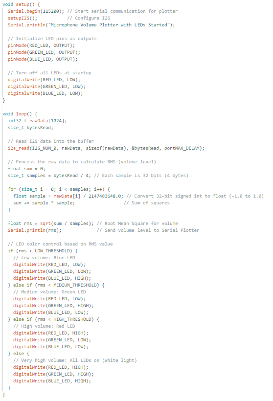
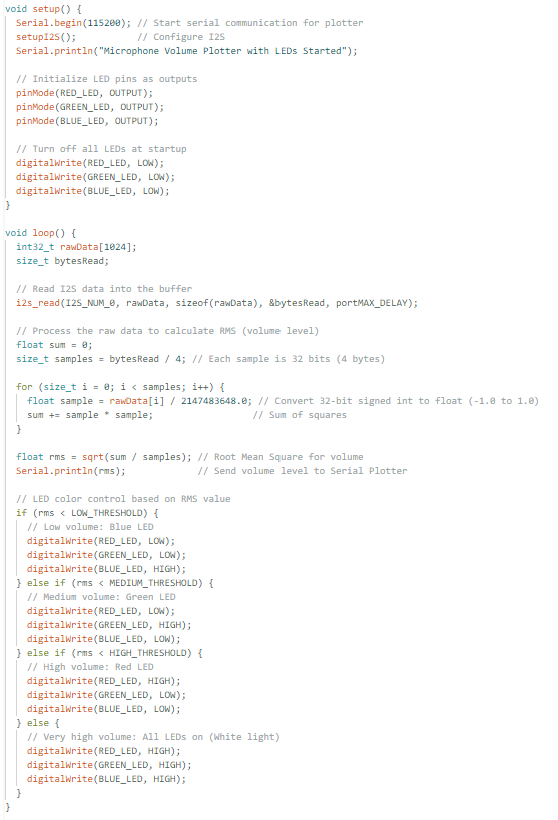

~sensors (capacitive and otherwise)~
step 1: capacitive sensor
1.1 arduino code
this code sends power to the "pen" (the wire with the metal at the end)...
it then measures the voltage drop from the pen to the two metal strips (x and y axis)
lastly, it converts the capacitance based on the pen movement to coordinates and maps dots on the led screen (top left = low capacitance, bottom right = high)
1.2 use!!
step 2: audio sensor (microphone)
1.1 arduino code
 

this code takes in audio input in from the microphone and then converts the volume to colors in the led
blue = low volume, green = medium volume, red = high volume, white = super duper loud
1.2 use!! (sound on!!!)
what worked well:
- i was able to map the capacitance to the led monitor
- getting the microphone to actually pick up the volume (many mics were broken)
what didn't :(
- original goal was to use the capacitance pad as like a drawing pad, but mainly only mapped along the diagonal
- volume sensor was supperrrrrr sensitive so very finicky light results